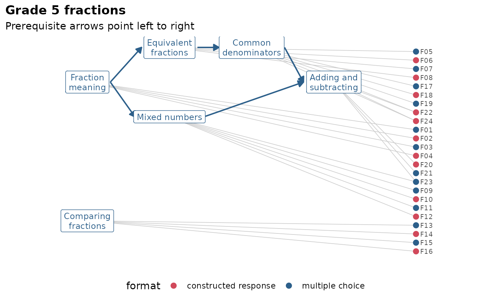

Attaches a table of item-level information to the items of a knowledge
graph: Item text, format, cognitive level, a curriculum standard, word
count, response time, whether a person or a language model wrote the
item, or anything else known about each item. The metadata travels with
the graph: tidy(kg, "items") returns it, gg_kg() can colour items by
it, mv_kg_explain() can use it to explain item difficulty next to the
concepts, and mv_kg_extract() reads item text from it.
Arguments
- kg
a knowledge graph from
mv_kg_build()oras_mv_kg().- meta
a data frame with one row per item and an item id column.
- by
the name of the item id column in
meta. By defaultitem, oridwhen there is noitemcolumn.
Value
The graph with its metadata in kg$meta: A tibble with a column
item (every item of the graph, in graph order) and one column per
metadata field. Items without a row in meta get NA.
Details
Calling mv_kg_annotate() again adds more columns; a column with the
same name as an existing one replaces it. mv_kg_subset() and
mv_kg_refine() keep the metadata of the items they keep.
See also
mv_kg_build(), which takes metadata through its meta
argument.
Examples
kg <- mv_kg_annotate(fractions_kg, data.frame(
item = sprintf("F%02d", 1:24),
format = rep(c("multiple choice", "constructed response"), 12)))
tidy(kg, "items")
#> # A tibble: 24 × 4
#> item concepts n_concepts format
#> <chr> <chr> <int> <chr>
#> 1 F01 meaning 1 multiple choice
#> 2 F02 meaning 1 constructed response
#> 3 F03 meaning 1 multiple choice
#> 4 F04 meaning 1 constructed response
#> 5 F05 equivalent 1 multiple choice
#> 6 F06 equivalent 1 constructed response
#> 7 F07 equivalent 1 multiple choice
#> 8 F08 equivalent 1 constructed response
#> 9 F09 mixed 1 multiple choice
#> 10 F10 mixed 1 constructed response
#> # ℹ 14 more rows
gg_kg(kg, colour = "format")

# the Tatsuoka items come with their text
tidy(fraction_subtraction_kg, "items")
#> # A tibble: 20 × 4
#> item concepts n_concepts text
#> <chr> <chr> <int> <chr>
#> 1 FS01 common_denominator, column_borrow, subtract_numerators 3 5/3 …
#> 2 FS02 common_denominator, subtract_numerators 2 3/4 …
#> 3 FS03 common_denominator, subtract_numerators 2 5/6 …
#> 4 FS04 separate_whole, simplify_first, borrow_whole, subtrac… 4 3 1/…
#> 5 FS05 separate_whole, common_denominator, subtract_numerato… 4 4 3/…
#> 6 FS06 subtract_numerators 1 6/7 …
#> 7 FS07 convert_whole, separate_whole, subtract_numerators 3 3 - …
#> 8 FS08 subtract_numerators 1 2/3 …
#> 9 FS09 separate_whole 1 3 7/…
#> 10 FS10 separate_whole, borrow_whole, subtract_numerators, re… 4 4 4/…
#> 11 FS11 separate_whole, borrow_whole, subtract_numerators 3 4 1/…
#> 12 FS12 subtract_numerators, reduce_answer 2 11/8…
#> 13 FS13 separate_whole, common_denominator, borrow_whole, sub… 4 3 3/…
#> 14 FS14 separate_whole, subtract_numerators 2 3 4/…
#> 15 FS15 convert_whole, subtract_numerators 2 2 - …
#> 16 FS16 separate_whole, subtract_numerators 2 4 5/…
#> 17 FS17 separate_whole, borrow_whole, subtract_numerators 3 7 3/…
#> 18 FS18 separate_whole, borrow_whole, column_borrow, subtract… 4 4 1/…
#> 19 FS19 convert_whole, separate_whole, simplify_first, borrow… 5 4 - …
#> 20 FS20 separate_whole, simplify_first, borrow_whole, subtrac… 4 4 1/…